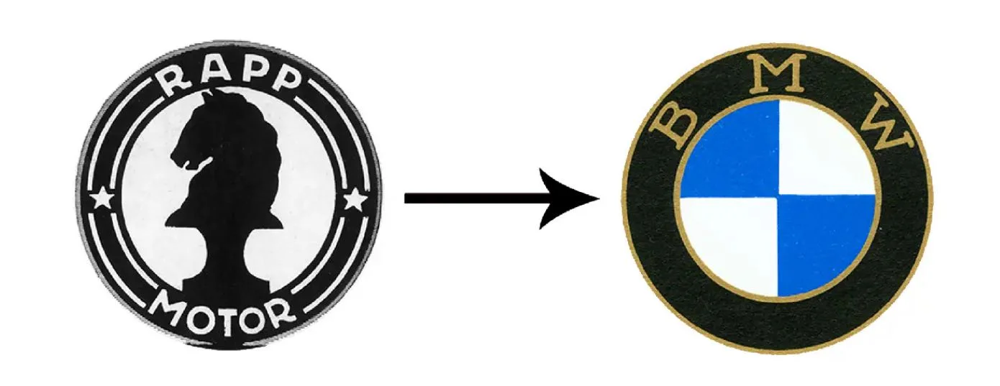
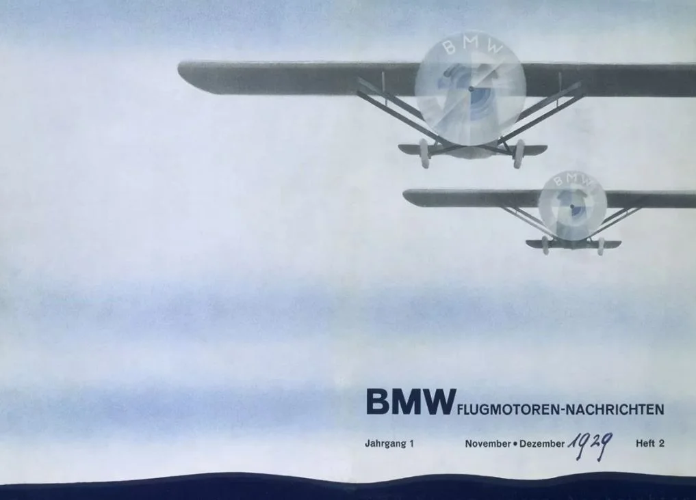
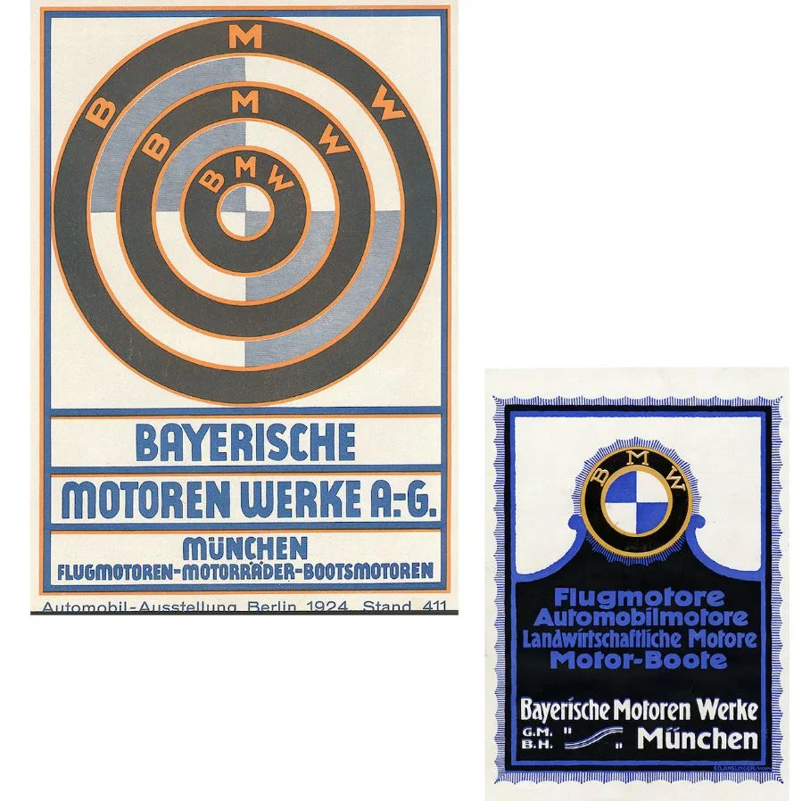
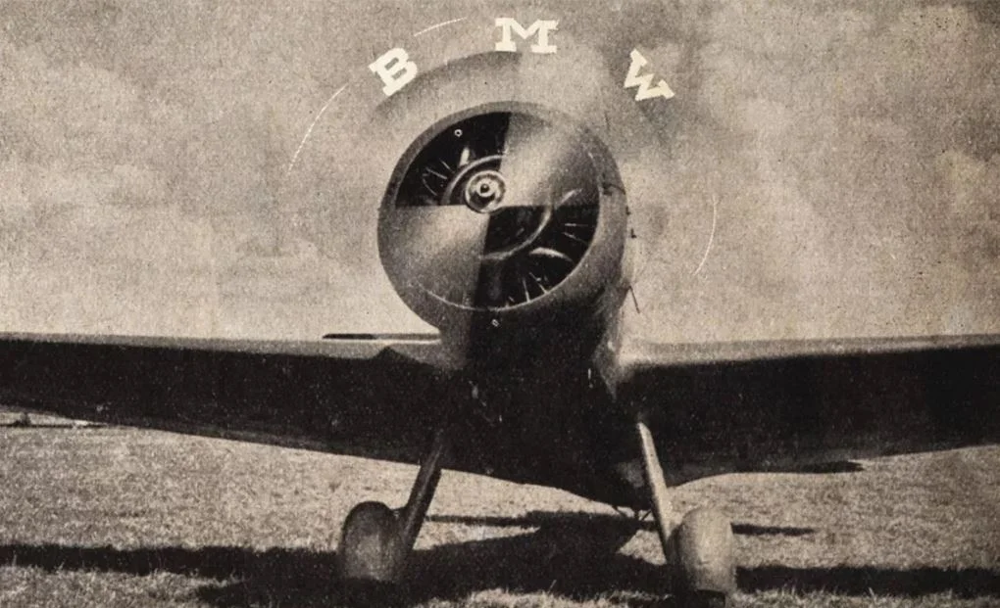
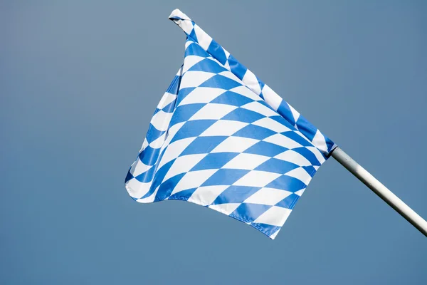

Історія німецького бренду BMW (Bayerische Motoren Werke або Bavarian Motor Works) почалася понад сто років тому. Але тоді компанія не займалася розробкою автомобілів і навіть назва з самого початку була іншою. А на логотипі взагалі був зображений кінь. До того моменту, як дизайнери не вигадали вже звичну сьогодні круглу синьо-білу емблему. За роки свого існування логотип бренду змінювався декілька разів, але головним елементом залишився той саме синьо-білий колір. Але чи знаєте ви, що він символізує і що насправді на ньому зображено? Розповідаємо історію створення та розвитку логотипа нині вже великого автомобільного концерну BMW.
Компанія BMW бере початок у Мюнхені у 1913 році, але з самого початку зовсім під іншою назвою. Тоді її ще не знали, як Rapp Motorenwerke. Це була фірма, що займається виробництвом двигунів літаків, заснована Карлом Фрідріхом Раппе. Протягом перших кількох років свого існування він, в основному, виробляв літальні двигуни для військово-повітряних сил Німеччини під час Першої світової війни. Попит зростав. Згодом компанія розширилася, назва змінилася на Bayerische Motoren Werke (Баварські моторні заводи). Так, у 1917 році світ вперше побачив BMW, а, відповідно, і новий логотип.
Логотип компанії Rapp Motorenwerke/перший логотип BMW
Логотип BMW почали часто асоціювати із зображенням гвинта. Директор архіву BMW Group Classic Фред Якобс запевняє, що насправді це легенда. Вона випливає з реклами, опублікованої у 1929 році, зображуючи літак з написом BMW на гвинті в польоті. І дійсно, він став схожим на логотип.
Завдання цієї реклами на самому початку світової економічної кризи полягало в просуванні нового авіаційного двигуна, що випускався BMW за ліцензією Pratt & Whitney. Пропелер добре вписувався у рекламний імідж молодої компанії, оскільки це підкреслювало її коріння та досвід у створенні авіамоторів.
Насправді, спростовувати міф в компанії не поспішали. У 1942 році, BMW ще раз пов’язав гвинт із символом своєї компанії. Стаття з’явилась у публікації BMW під назвою «Flugmotoren-Nachrichten» (Новини авіаційного двигуна), яка підкріпила легенду про походження лого: в статті додали фото літака з назвою BMW на гвинті. Цей міф жив багато років і навіть сьогодні його часто пов’язують з сучасним логотипом бренду. «Ця інтерпретація була поширена протягом 90 років, і згодом вона отримала певне право на існування», — додав Якобс.
Насправді ж, основа дизайну логотипа BMW — його кольорова гама. Білий і синій — кольори штату Баварія в Німеччині — те, де народився бренд. А ще ці кольори та навіть візерунки, схожі на ті, що частково зображені на логотипі BMW, можна побачити на прапорі землі Баварія.
Баварський прапор
Кольори в логотипі подібні до баварського прапору, але зображені вони у зворотному порядку. Причиною цього став місцевий закон про товарні знаки того часу, який забороняв використання державних гербів чи інших символів суверенітету на комерційних логотипах.
Компанія BMW залишалася вірною своєму першому логотипу. У центрі завжди був той саме візерунок та ті самі кольори. З роками змінювалися лише стилі: дизайнери намагалися не відставати від модних тенденцій, додавати об’єм, кольори фону, змінювати шрифт тексту та товщину кільця.
Фото: BMW